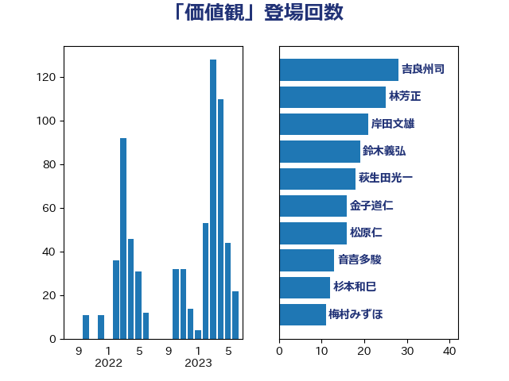

単語「価値観」

| 吉良州司 | 無所属 | 28 回 |
| 林芳正 | 自由民主党 | 25 回 |
| 岸田文雄 | 自由民主党 | 21 回 |
| 鈴木義弘 | 国民民主党 | 19 回 |
| 萩生田光一 | 自由民主党 | 18 回 |
| 金子道仁 | 日本維新の会 | 16 回 |
| 松原仁 | 立憲民主党 | 16 回 |
| 音喜多駿 | 日本維新の会 | 13 回 |
| 杉本和巳 | 日本維新の会 | 12 回 |
| 梅村みずほ | 日本維新の会 | 11 回 |
| 堀場幸子 | 日本維新の会 | 10 回 |
| 緒方林太郎 | 無所属 | 9 回 |
| 浜田聡 | NHK党 | 9 回 |
| 牧山ひろえ | 立憲民主党 | 8 回 |
| 徳永久志 | 無所属 | 8 回 |
| 小倉將信 | 自由民主党 | 8 回 |
| 寺田学 | 立憲民主党 | 8 回 |
| 古川禎久 | 自由民主党 | 8 回 |
| 篠原孝 | 立憲民主党 | 7 回 |
| 嘉田由紀子 | 無所属 | 7 回 |
| 北神圭朗 | 無所属 | 7 回 |
| 青柳仁士 | 日本維新の会 | 6 回 |
| 沢田良 | 日本維新の会 | 6 回 |
| 羽田次郎 | 立憲民主党 | 5 回 |
| 玄葉光一郎 | 立憲民主党 | 5 回 |
| 永岡桂子 | 自由民主党 | 5 回 |
| 櫻井周 | 立憲民主党 | 5 回 |
| 有村治子 | 自由民主党 | 5 回 |
| 小野泰輔 | 日本維新の会 | 5 回 |
| 守島正 | 日本維新の会 | 5 回 |
| 奥野総一郎 | 立憲民主党 | 5 回 |
| 高良鉄美 | 無所属 | 4 回 |
| 高橋千鶴子 | 日本共産党 | 4 回 |
| 鈴木敦 | 国民民主党 | 4 回 |
| 鈴木宗男 | 日本維新の会 | 4 回 |
| 渡辺周 | 立憲民主党 | 4 回 |
| 榛葉賀津也 | 国民民主党 | 4 回 |
| 掘井健智 | 日本維新の会 | 4 回 |
| 山口晋 | 自由民主党 | 4 回 |
| 小熊慎司 | 立憲民主党 | 4 回 |
| 伊波洋一 | 無所属 | 4 回 |
| 高村正大 | 自由民主党 | 3 回 |
| 野田聖子 | 自由民主党 | 3 回 |
| 足立康史 | 日本維新の会 | 3 回 |
| 西村康稔 | 自由民主党 | 3 回 |
| 笠井亮 | 日本共産党 | 3 回 |
| 田村智子 | 日本共産党 | 3 回 |
| 浅田均 | 日本維新の会 | 3 回 |
| 村田享子 | 立憲民主党 | 3 回 |
| 斉藤鉄夫 | 公明党 | 3 回 |
| 平木大作 | 公明党 | 3 回 |
| 天畠大輔 | れいわ新選組 | 3 回 |
| 塩村あやか | 立憲民主党 | 3 回 |
| 吉田宣弘 | 公明党 | 3 回 |
| 井上哲士 | 日本共産党 | 3 回 |
| 中川郁子 | 自由民主党 | 3 回 |
| 世耕弘成 | 自由民主党 | 3 回 |
| 上田清司 | 国民民主党 | 3 回 |
| 上月良祐 | 自由民主党 | 3 回 |
| 高見康裕 | 自由民主党 | 2 回 |
| 高木かおり | 日本維新の会 | 2 回 |
| 青山大人 | 立憲民主党 | 2 回 |
| 鈴木貴子 | 自由民主党 | 2 回 |
| 金村龍那 | 日本維新の会 | 2 回 |
| 野田佳彦 | 立憲民主党 | 2 回 |
| 辻清人 | 自由民主党 | 2 回 |
| 赤木正幸 | 日本維新の会 | 2 回 |
| 西村智奈美 | 立憲民主党 | 2 回 |
| 藤原崇 | 自由民主党 | 2 回 |
| 舩後靖彦 | れいわ新選組 | 2 回 |
| 穀田恵二 | 日本共産党 | 2 回 |
| 稲富修二 | 立憲民主党 | 2 回 |
| 福島伸享 | 無所属 | 2 回 |
| 福山哲郎 | 立憲民主党 | 2 回 |
| 石川大我 | 立憲民主党 | 2 回 |
| 甘利明 | 自由民主党 | 2 回 |
| 玉木雄一郎 | 国民民主党 | 2 回 |
| 牧義夫 | 立憲民主党 | 2 回 |
| 滝波宏文 | 自由民主党 | 2 回 |
| 清水真人 | 自由民主党 | 2 回 |
| 浅野哲 | 国民民主党 | 2 回 |
| 横山信一 | 公明党 | 2 回 |
| 柴田巧 | 日本維新の会 | 2 回 |
| 川田龍平 | 立憲民主党 | 2 回 |
| 川合孝典 | 国民民主党 | 2 回 |
| 山際大志郎 | 自由民主党 | 2 回 |
| 小林鷹之 | 自由民主党 | 2 回 |
| 小宮山泰子 | 立憲民主党 | 2 回 |
| 奥下剛光 | 日本維新の会 | 2 回 |
| 和田有一朗 | 日本維新の会 | 2 回 |
| 吉田久美子 | 公明党 | 2 回 |
| 古川直季 | 自由民主党 | 2 回 |
| 仁比聡平 | 日本共産党 | 2 回 |
| 仁木博文 | 無所属 | 2 回 |
| 井坂信彦 | 立憲民主党 | 2 回 |
| 井出庸生 | 自由民主党 | 2 回 |
| 五十嵐清 | 自由民主党 | 2 回 |
| 中川正春 | 立憲民主党 | 2 回 |
| 中山展宏 | 自由民主党 | 2 回 |
| 鬼木誠 | 立憲民主党 | 1 回 |
| 高橋はるみ | 自由民主党 | 1 回 |
| 高木真理 | 立憲民主党 | 1 回 |
| 高木啓 | 自由民主党 | 1 回 |
| 青島健太 | 日本維新の会 | 1 回 |
| 阿部弘樹 | 日本維新の会 | 1 回 |
| 阿部司 | 日本維新の会 | 1 回 |
| 長友慎治 | 国民民主党 | 1 回 |
| 鈴木庸介 | 立憲民主党 | 1 回 |
| 金城泰邦 | 公明党 | 1 回 |
| 重徳和彦 | 立憲民主党 | 1 回 |
| 赤羽一嘉 | 公明党 | 1 回 |
| 赤池誠章 | 自由民主党 | 1 回 |
| 谷合正明 | 公明党 | 1 回 |
| 西野太亮 | 自由民主党 | 1 回 |
| 西田昌司 | 自由民主党 | 1 回 |
| 藤巻健太 | 日本維新の会 | 1 回 |
| 葉梨康弘 | 自由民主党 | 1 回 |
| 菊田真紀子 | 立憲民主党 | 1 回 |
| 若宮健嗣 | 自由民主党 | 1 回 |
| 篠原豪 | 立憲民主党 | 1 回 |
| 稲田朋美 | 自由民主党 | 1 回 |
| 石垣のりこ | 立憲民主党 | 1 回 |
| 石井準一 | 自由民主党 | 1 回 |
| 矢倉克夫 | 公明党 | 1 回 |
| 白石洋一 | 立憲民主党 | 1 回 |
| 田村まみ | 国民民主党 | 1 回 |
| 田中英之 | 自由民主党 | 1 回 |
| 田中健 | 国民民主党 | 1 回 |
| 片山大介 | 日本維新の会 | 1 回 |
| 熊谷裕人 | 立憲民主党 | 1 回 |
| 漆間譲司 | 日本維新の会 | 1 回 |
| 湯原俊二 | 立憲民主党 | 1 回 |
| 清水貴之 | 日本維新の会 | 1 回 |
| 津島淳 | 自由民主党 | 1 回 |
| 河野義博 | 公明党 | 1 回 |
| 江田憲司 | 立憲民主党 | 1 回 |
| 森本真治 | 立憲民主党 | 1 回 |
| 森山浩行 | 立憲民主党 | 1 回 |
| 森屋宏 | 自由民主党 | 1 回 |
| 梅村聡 | 日本維新の会 | 1 回 |
| 柳本顕 | 自由民主党 | 1 回 |
| 枝野幸男 | 立憲民主党 | 1 回 |
| 松沢成文 | 日本維新の会 | 1 回 |
| 松本剛明 | 自由民主党 | 1 回 |
| 松木けんこう | 立憲民主党 | 1 回 |
| 松川るい | 自由民主党 | 1 回 |
| 松山政司 | 自由民主党 | 1 回 |
| 杉尾秀哉 | 立憲民主党 | 1 回 |
| 末松信介 | 自由民主党 | 1 回 |
| 朝日健太郎 | 自由民主党 | 1 回 |
| 斎藤アレックス | 国民民主党 | 1 回 |
| 平林晃 | 公明党 | 1 回 |
| 山谷えり子 | 自由民主党 | 1 回 |
| 山田美樹 | 自由民主党 | 1 回 |
| 山田太郎 | 自由民主党 | 1 回 |
| 山添拓 | 日本共産党 | 1 回 |
| 山本剛正 | 日本維新の会 | 1 回 |
| 山岸一生 | 立憲民主党 | 1 回 |
| 山下芳生 | 日本共産党 | 1 回 |
| 小野田紀美 | 自由民主党 | 1 回 |
| 小野寺五典 | 自由民主党 | 1 回 |
| 小川淳也 | 立憲民主党 | 1 回 |
| 宮路拓馬 | 自由民主党 | 1 回 |
| 宮本岳志 | 日本共産党 | 1 回 |
| 宮崎雅夫 | 自由民主党 | 1 回 |
| 宗清皇一 | 自由民主党 | 1 回 |
| 安江伸夫 | 公明党 | 1 回 |
| 大塚耕平 | 国民民主党 | 1 回 |
| 大口善徳 | 公明党 | 1 回 |
| 坂本祐之輔 | 立憲民主党 | 1 回 |
| 國重徹 | 公明党 | 1 回 |
| 吉田はるみ | 立憲民主党 | 1 回 |
| 吉田とも代 | 日本維新の会 | 1 回 |
| 古庄玄知 | 自由民主党 | 1 回 |
| 古川康 | 自由民主党 | 1 回 |
| 務台俊介 | 自由民主党 | 1 回 |
| 加藤鮎子 | 自由民主党 | 1 回 |
| 加藤勝信 | 自由民主党 | 1 回 |
| 加田裕之 | 自由民主党 | 1 回 |
| 佐藤正久 | 自由民主党 | 1 回 |
| 住吉寛紀 | 日本維新の会 | 1 回 |
| 伴野豊 | 立憲民主党 | 1 回 |
| 伊藤渉 | 公明党 | 1 回 |
| 伊藤孝江 | 公明党 | 1 回 |
| 伊藤孝恵 | 国民民主党 | 1 回 |
| 井林辰憲 | 自由民主党 | 1 回 |
| 丸川珠代 | 自由民主党 | 1 回 |
| 上田勇 | 公明党 | 1 回 |
| 三木圭恵 | 日本維新の会 | 1 回 |
| 一谷勇一郎 | 日本維新の会 | 1 回 |